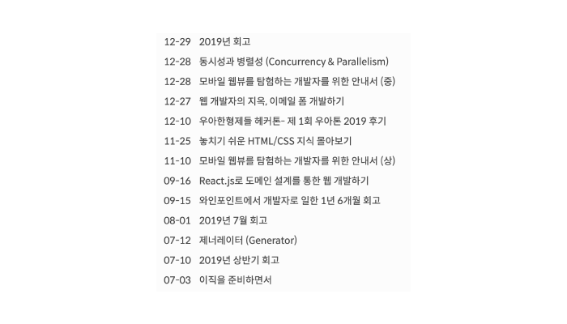

글또 4기를 시작하면서

글또 3기에 이어서 글또 4기도 시작하게 되었습니다.
글또 4기
(글또 아이콘, 나영님 감사합니다!)
글또는 글쓰는 또라이의 약자로써, 2주에 한 글씩 작성하는 모임이에요. 이번 4기에는 총 68분(헉) 많은 분들이 참석하게 되셨어요. 사람이 많아진 만큼 훌륭한 분들이 많이 오셔서, 다양한 분들과 이야기를 나눌 수 있게 되었습니다.
저번 기수에도 많은 개발자분들의 글을 보면서 많은 성장을 할 수 있었는데, 올해도 어김없이 성장을 하는 계기가 될 거라 생각합니다.
목표
완성도와 글을 하루도 빠짐없이 게시하자는 두 가지를 잡아보고자 몇 가지 목표를 정하기로 했습니다.
- 완성도 있게 글을 쓰되, 분량이 긴 글은 시리즈를 이용하자.
- 2주동안 하루에 한 문단씩 작업하여 일일 커밋을 진행한다.
- 한번에 여러글을 작업하지 말고 하나의 글만 작업한다.
- 이미지를 가공하여 퍼블리쉬한다.
완성도 있게 글을 쓰되, 분량이 긴 글은 시리즈를 이용하자
(이전에도 한 달 단위로 시리즈를 작업한 적 있다.)
글이 상당히 길어질수록 제대로 된 시간에 제출을 못하는 일이 잦았습니다. 그렇기 때문에 저번 글또 3기에서는 분량 컨트롤을 제대로 못했다고 생각합니다.
앞으로는 시리즈를 이용하여 분량을 컨트롤 해볼 예정입니다.
2주동안 하루에 한 문단씩 작업하여 일일 커밋을 진행하자

(게시 날짜를 보라!)
저번 3기때의 목표는, 글을 하루도 빠지지 않고 게시하자!가 목표였습니다. 하지만 이직 및 바쁜 회사일 일정으로 인해서 글을 모두 작성하지 못했습니다. 그래서 4번정도 글이 지연되어 막판에 몰아서 글을 작성했었습니다.
이렇게 몰아서 작성하니 문제는 글의 퀄리티가 들쭉날쭉하다는 것입니다. 글을 쓸 때 다른건 못챙겨도 꼭 챙기자고 마음속으로 결심했던 완성도 측면에서 아쉬운 글이 많았습니다.
그래서 글을 쓰는 2주간 하루에 한 문단씩 작업하여 일일 커밋을 진행하면 점진적으로 완성도 있는 글을 작업할 수 있을꺼라 생각했습니다.
한번에 여러글을 작업하지 말고 하나의 글만 작업한다
(드래프트된 글을 보라!)
작년에 많은 글을 작업하고 싶으니 한번에 많은 주제의 글을 작업해보자 라고 생각해서 진행을 했었습니다. 하지만 이 방법은 다른 글을 쓰다 돌아오면 문맥이 깨져버리는 문제가 도출되었고, 올해부터는 한번에 한 글만 작성하기로 마음먹었습니다. (…)
이미지를 가공하여 퍼블리쉬한다.
(이미지를 가공하지 않아서 한 화면에 이미지로 도배된 모습)
이미지가 한 화면에 도배되어서 아에 안보이던 문제가 있었습니다. 이런 문제는 글의 퀄리티를 떨어뜨린다 생각을 했고, 외관적으로도 정리를 잘해야겠다는 생각이 들었습니다.
글의 방향성
목표와 별개로, 이번년도는 글의 방향성을 보다 전문성있는 개발자의 포스팅을 목표로 하고자 합니다. 작년의 글은 대다수가 회고 혹은 HTML/CSS 부분이 많았습니다.

(대다수의 글이 HTML, CSS 관련 글이었다)
그래서 이번년도에는 보다 JavaScript, TypeScript, React, Vue등 조금 더 프론트앤드 개발자로써 전문적인 글을 작성하고자 합니다.